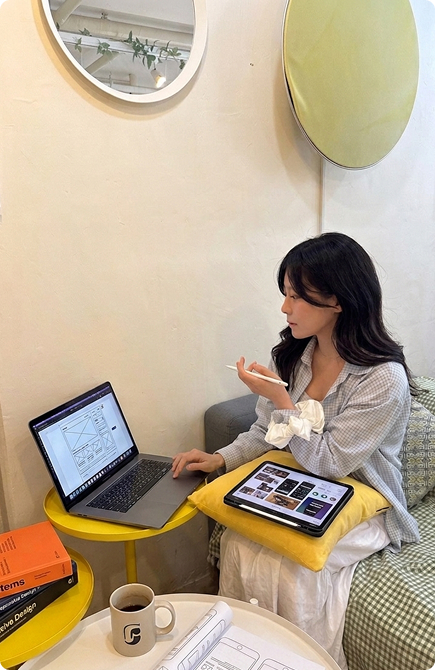

디자인이란 눈에 보이는 화려함을 넘어 사용자의 심리적 흐름을 설계하는 과정이라 믿습니다. 사용자는 의식하지 않아도 자연스러운 흐름 속에서 움직이며 화면 안의 의미를 발견합니다.
저는 작은 디테일 하나가 전체 경험을 바꾼다고 확신하기에, 보이지 않는 부분까지 끊임없이 고민합니다. 디자인의 심미성은 물론 구현의 효율성을 고려한 최적의 코딩으로 유연하고 직관적인 인터페이스를 제공하여, 사용자가 흐름에 몸을 맡길 수 있는 '의미 있는 경험'을 설계하는 것이 제가 지향하는 디자인의 본질입니다.

좋은 디자인은 완벽한 픽셀을 넘어, 동료와의 유연한 소통과 기술적 이해에서 완성된다고 믿습니다.
획자의 의도를 정확하게 파악하고, 사용자의 입장에서 공감할 수 있는 최적의 시각적 언어를 제안합니다.
개발자가 구현하기 용이한 구조를 고민하고, 기획자의 의도를 정확하게 시각화하기 위해 끊임 없이 소통합니다
프로젝트의 완성도를 높이기 위한 피드백을 즐기며, 더 나은 결과물을 위해 동료들과 함께 정답을 찾아 나갑니다.
사용자의 심리적 흐름을 분석하고, 이를 안정적인 코드로 구현해내는 실무형 역량을 갖추고 있습니다.
컴포넌트 단위의 디자인 시스템을 구축하여 작업의 효율성을 높이고, 기획의 의도가 개발로 이어질 수 있는 정교한 가이드를 제작합니다.
다양한 디바이스의 환경에서도 끊김 없는 사용자 경험을 위해, 기기 별 최적화된 레이아웃과 유연한 인터페이스를 설계합니다.
시각적 의도를 100% 실현하기 위해 직접 코딩하며, 웹 표준과 접근성을 준수하는 효율적인 퍼블리싱으로 생명력 있는 웹을 완성합니다.
웹 디자인을 공부하면서 취득한 자격증 입니다.